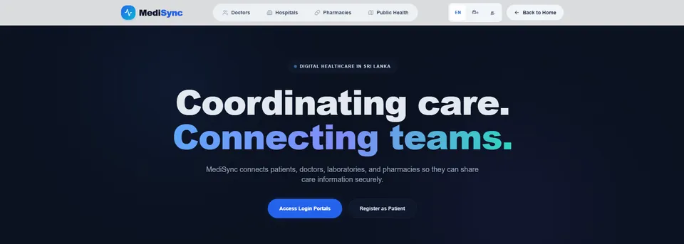
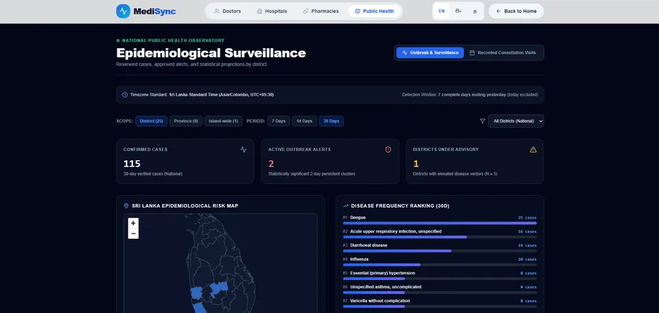
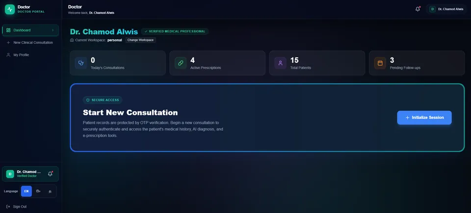

Case study · BSc (Hons) Data Science capstone (ongoing)
MediSync
AI-driven national healthcare platform for Sri Lanka.
- services: React, Node.js, Flask ML
- 3services: React, Node.js, Flask ML
- drug-interaction pairs checked
- 191k+drug-interaction pairs checked
- initial JS bundle after code-splitting
- 465→145 KBinitial JS bundle after code-splitting

Overview
MediSync is my BSc (Hons) Data Science capstone: a national healthcare platform for Sri Lanka that I designed and built on my own. It connects patients, doctors, pharmacies, hospitals/labs and administrators, keeps medical records encrypted, and forecasts disease outbreaks by district.
Problem
Patients, doctors, pharmacies, hospitals and labs need to share medical records and prescriptions safely, and health officials need early warning when a disease starts to spread in a district.
What I built. A three-service platform: a React 19 front end, a Node.js / Express 5 API and a Python Flask ML engine. Each role has its own portal, patient records sit behind encryption and OTP-based consent, and a public map shows outbreak risk for every district in Sri Lanka.
My role
Solo project: I designed and built all three services. That covered the React front end, the Node.js/Express API, the Flask ML engine, the security layer and the CI/CD pipeline.
Architecture
Key features
- Outbreak forecasting with Prophet and ARIMA, plus z-score anomaly detection for unusual case spikes.
- Public Sri Lanka district choropleth map built with Leaflet and GeoJSON.
- AES-256 field-level encryption with blind indexes, keys in HashiCorp Vault, Redis, OTP-gated access to patient records and audit logs.
- Separate portals for patients, doctors, pharmacies, hospitals/labs and admins.
- Drug-interaction and allergy checks against 3,000 drugs, 191k+ interaction pairs and 71k+ ICD codes.
- CI/CD with GitHub Actions, deployed on Vercel.
Tech decisions
- Split into three services (React 19 front end, Node.js/Express 5 API, Flask ML engine) so the Python forecasting work can scale and deploy independently of the web API.
- Patient data is protected with AES-256 field-level encryption using an envelope-encryption flow. Keys are managed in HashiCorp Vault, and blind indexes let encrypted fields such as NIC numbers still be searched without decrypting them.
- Outbreak detection combines Prophet forecasting with z-score anomaly detection, and the results appear on a public Sri Lanka district map built with Leaflet and GeoJSON.
- Session tokens are kept in memory instead of localStorage to reduce XSS exposure, and patient records open only after an OTP check.
Challenges & what I learned
- Upgrading to Express 5 broke express-mongo-sanitize and caused a site-wide outage. I traced it to the now read-only req.query, replaced the package with custom sanitising middleware, and learned to test dependencies against major-version upgrades.
- The public health page was slow because one endpoint aggregated 20k+ rows on every request. Code-splitting cut the initial JS from 465 KB to 145 KB; caching that aggregation is the next step.
- Finding secrets in the git history taught me to rotate credentials immediately and to add secret scanning and CI security tests (GitHub Actions) to the pipeline.
Screenshots


Links
Stack: React 19 · Node.js · Express 5 · Python · Flask · Prophet · ARIMA · scikit-learn · MongoDB Atlas · Redis · HashiCorp Vault · Cloudinary · Socket.IO · Leaflet · GitHub Actions · Vercel
More case studies: